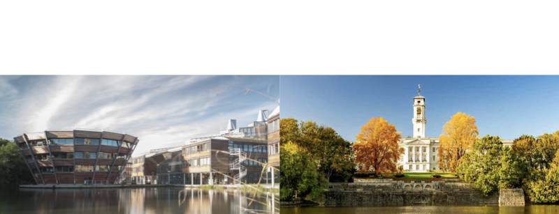

University of Nottingham, UK, April 8-10, 2024

This workshop will bring together a small number of experts from across the physics/applied-maths/CS divide with common interests in machine learning theory and its applications in order to exchange ideas and identify synergies.
Speakers:
Giulio Biroli (ENS Paris), Marin Bukov (MPI-PKS), Gino Cassella (Imperial), Arnaud Doucet (DeepMind/Oxford), Marylou Gabrié (Polytechnique Paris), Martin Gärttner (Jena), Thiago Guedes (Juelich), Markus Heyl (Augsburg), Zala Lenarčič (Ljubljana), Sirui Lu (MPQ), Florian Marquardt (MPI Erlangen), Jannes Nys (EPFL), Nicola Pancotti (AWS), Frank Pollmann (TU Munich), Dominic Rose (UCL), Grant Rotskoff (Stanford), Adam Smith (Nottingham), Riccardo Zecchina (Bocconi)
Meeting venue:
Accommodation and lectures will be in the Jubilee Campus Hotel at the University of Nottingham. Lectures in meeting room 5A/5B.
Programme:
Monday
-
09:30-10:10 Florian Marquardt (MPI Erlangen): Machine Learning for Quantum Circuits
-
10:10-10:50 Martin Gärttner (Jena): Machine-learning assisted readout of quantum simulators
-
10:50-11:30 Coffee break
-
11:30-12:30 Arnaud Doucet (DeepMind/Oxford): From denoising diffusions to Schrodinger bridges
-
12:30-14:00 Lunch
-
14:00-14:40 Marylou Gabrié (Polytechnique Paris): Assisting sampling of metastable systems with generative models
-
14:40-15:20 Giulio Biroli (ENS Paris): Generative AI and diffusion models: a statistical physics perspective
-
15:20-15:50 Coffee break
-
15:50-16:30 Marin Bukov (MPI-PKS): Self-Correcting Quantum Many-Body Control using Reinforcement Learning withTensor Networks
-
16:30-17:10 Dominic Rose (UCL): Combining reinforcement learning and tensor networks for rare trajectory sampling
Tuesday
-
09:30-10:10 Frank Pollmann (TU Munich): Learning Phases of Matter with Quantum Convolutional Neural Networks
-
10:10-10:50 Adam Smith (Nottingham): Using neural networks to navigate the quantum optimisation landscape
-
10:50-11:20 Coffee break
-
11:20-12:00 Zala Lenarčič (Ljubljana): Reconstructing effective Hamiltonians with unsupervised learning
-
12:00-12:40 Markus Heyl (Augsburg): Solving 2D quantum matter with neural quantum states
-
12:40-14:00 Lunch
-
14:00-14:40 Georg Martius (Tübingen): Equation learning and learning of generators
-
14:40-15:20 Riccardo Zecchina (Bocconi): TBA (about Results at the interface between ML and cNeuro)
-
15:20-15:50 Coffee break
-
15:50-16:30 Grant Rotskoff (Stanford): Building data-efficient generative models of proteins with modular sampling strategies
-
16:30-17:10 Nicola Pancotti (AWS): Message passing techniques for tensor networks contractions
Wednesday
-
09:30-10:10 Gino Cassella (Imperial): Freedom from basis sets with Neural Network Variational Monte Carlo
-
10:10-10:50 Sirui Lu (MPQ): Variational Neural and Tensor Network Approximations of Thermal States
-
10:50-11:20 Coffee break
-
11:20-12:00 Jannes Nys (EPFL): Capturing many-fermion correlations with neural quantum states
-
12:00-12:40 Thiago Guedes (Juelich): Quantum cellular automata for quantum error correction
-
12:40-14:00 Lunch - End
Organisers:
Funding:
This workshop is funded from a network collaboration between the Universities of Nottingham (School of Physics and Astronomy), Tübingen (Institute for Theoretical Physics and Department of Computer Science), and Stellenbosch (Department of Mathematical Sciences).